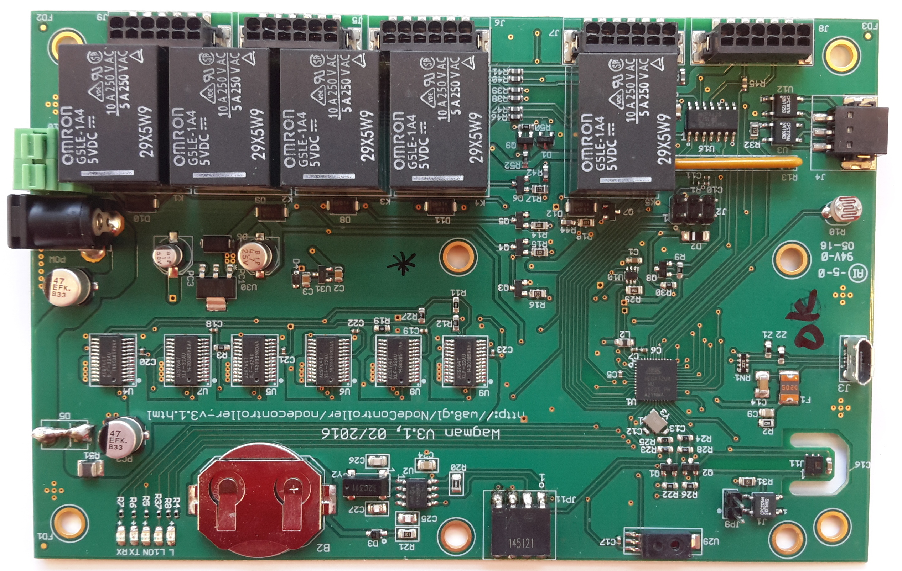
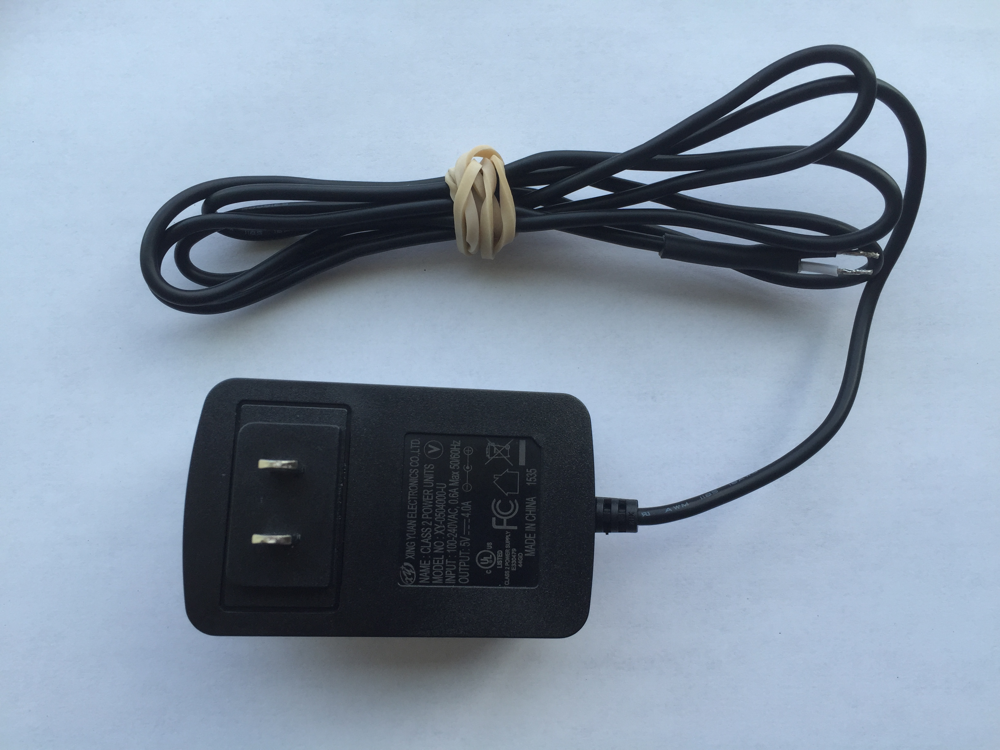

This explains how to set up a waggle node that includes wagman, nodecontroller, and extension_node.
A waggle node consists of following parts:


System diagram is depicted below. The solid lines are the cables that should properly be connected with the devices. Please follow the instructions below in order to build a waggle node.
Next step: Assemble the waggle node